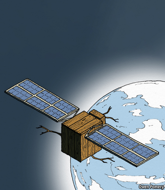

Text
2021-01-30T06:11:42+00:00
Space-age materials
太空时代材料
太空時代材料
Hardy, non-perennial
耐极温，不残留
耐極溫，不殘留
Making satellites out of wood
用木头造卫星
用木頭造衛星

THE SPACE age was built on clever materials. The business ends of rocket engines are composed of Inconel, a family of heat-and-corrosion-resistant nickel-chromium alloys developed in the 1940s. The “gold foil” adorning many satellites is, in fact, a form of insulation made from layers of Kapton and metallised Mylar, a pair of artificial polymers from the 1950s and 1960s. SpaceX’s Dragon spacecraft use a heat shield made of phenolic-impregnated carbon to protect astronauts during atmospheric re-entry.
太空时代建基于精妙的材料之上。火箭发动机的关键部分由因科耐尔合金组成，这是上世纪40年代研制的一种耐高温、耐腐蚀的镍铬合金。装饰在许多卫星上的“金箔”实际上是一种多层绝缘体，由聚酰亚胺和金属化聚酯薄膜制成，这两种人造聚合物分别研发于上世纪50和60年代。SpaceX的龙飞船使用的防热罩由酚醛浸渍碳制成，在重返大气层时保护宇航员。
太空時代建基於精妙的材料之上。火箭發動機的關鍵部分由因科耐爾合金組成，這是上世紀40年代研製的一種耐高溫、耐腐蝕的鎳鉻合金。裝飾在許多衛星上的“金箔”實際上是一種多層絕緣體，由聚酰亞胺和金屬化聚酯薄膜製成，這兩種人造聚合物分別研發於上世紀50和60年代。SpaceX的龍飛船使用的防熱罩由酚醛浸漬碳製成，在重返大氣層時保護宇航員。
But it is not just humans in lab coats who can come up with whizzy substances. Sumitomo Forestry, a Japanese firm, and Kyoto University are pondering the idea of building satellites out of an advanced, high-performance composite made from cellulose and lignin, a pair of complex polymers which are strong in tension and compression respectively. This material is both cheap and abundant. It is self-assembling and requires only simple chemical inputs. Manufacture can be entirely automated, requiring no human oversight. Translated from chemist-speak, they want to make satellites out of wood.
但是，并不是只有套着实验室大褂的人才能捣鼓出尖端材料。日本住友林业株式会社（Sumitomo Forestry）和京都大学正在考虑使用一种先进的高性能复合材料来制造卫星。这种复合材料由纤维素和木质素制成，这两种复杂聚合物分别具有很强的抗拉和抗压性能。这种材料既便宜又供应充足。它可以自组装，并且只需简单的化学辅料。其生产可以完全自动化，不需要人类监督。把这些化学行话翻译过来就是，他们想用木头造卫星。
但是，並不是只有套着實驗室大褂的人才能搗鼓出尖端材料。日本住友林業株式會社（Sumitomo Forestry）和京都大學正在考慮使用一種先進的高性能複合材料來製造衛星。這種複合材料由纖維素和木質素製成，這兩種複雜聚合物分別具有很強的抗拉和抗壓性能。這種材料既便宜又供應充足。它可以自組裝，並且只需簡單的化學輔料。其生產可以完全自動化，不需要人類監督。把這些化學行話翻譯過來就是，他們想用木頭造衛星。
The research team argue that wood offers two advantages. Unlike metal, seasoned timber is easily penetrated by radio waves. That means communication antennas, sensors and the like could be kept inside the body of the satellite. This, they hope, will simplify construction. The second advantage is that, on atmospheric re-entry, the wooden parts of the satellite should burn up entirely, making disposal cleaner.
研究小组认为用木材有两大优势。和金属不同，经干燥处理的木材很容易被无线电波穿透。这意味可以把通信天线、传感器等装置放在木制卫星内部。他们希望由此简化卫星的构造。第二个优点是，在重返大气层时，卫星的木制部分应该能完全燃烧掉，让废弃卫星的处理更加环保。
研究小組認為用木材有兩大優勢。和金屬不同，經乾燥處理的木材很容易被無線電波穿透。這意味可以把通信天線、傳感器等裝置放在木製衛星內部。他們希望由此簡化衛星的構造。第二個優點是，在重返大氣層時，衛星的木製部分應該能完全燃燒掉，讓廢棄衛星的處理更加環保。
The researchers hope to launch a prototype version of what they have dubbed a LignoSat by 2023. Space is both extremely cold and very hot, and can switch quickly between the two as a spacecraft moves from shade into direct sunlight. Processing wood to cope with such extremes will be crucial to success. Sumitomo has said merely that its way of doing this is an “R&D secret”.
研究人员将这种卫星命名为LignoSat，希望在2023年发射一颗原型。太空既极寒又酷热，当宇宙飞船从背阴处运行到阳光直射处时，就是在这两种气温环境间急剧转换。把木材处理得能够经受这样的极端变化是成功的关键。住友林业只表示其解决方案是个“研发机密”。
研究人員將這種衛星命名為LignoSat，希望在2023年發射一顆原型。太空既極寒又酷熱，當宇宙飛船從背陰處運行到陽光直射處時，就是在這兩種氣溫環境間急劇轉換。把木材處理得能夠經受這樣的極端變化是成功的關鍵。住友林業只表示其解決方案是個“研發機密”。
Sending wood into space is not Sumitomo’s only ambition for the material. It hopes that lessons from the satellite project might assist its plan to build the world’s tallest wooden skyscraper, in Tokyo. This building, dubbed W350, would celebrate the firm’s 350th birthday in 2041, and would, therefore, be 350 metres tall—roughly as high as the Empire State Building without its spire.
把木头送进太空并不是住友林业对这种材料的唯一追求。它希望从这个卫星项目中获得经验，帮助自己在东京建造世界上最高的木制大厦。这座被称为W350的建筑计划在2041年落成，以庆祝这家公司350岁生日，它的高度也因此被定为350米——和帝国大厦去掉尖顶差不多高。
把木頭送進太空並不是住友林業對這種材料的唯一追求。它希望從這個衛星項目中獲得經驗，幫助自己在東京建造世界上最高的木製大廈。這座被稱為W350的建築計劃在2041年落成，以慶祝這家公司350歲生日，它的高度也因此被定為350米——和帝國大廈去掉尖頂差不多高。